Next: Is the above a Up: Magnetic configuration with concentric-circular Previous: Magnetic configuration with concentric-circular
Let us check this. Write
 as
as
| 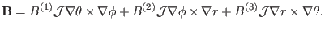 | (345) |
| 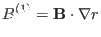 | (346) |
| 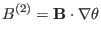 | (347) |
| 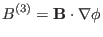 | (348) |
| 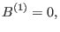 | (349) |
| 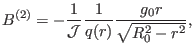 | (350) |
| 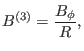 | (351) |
| 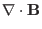 | 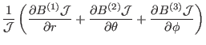 | ||
| 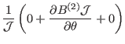 | |||
| 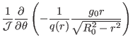 | |||
| 0 | (352) |
yj 2018-03-09